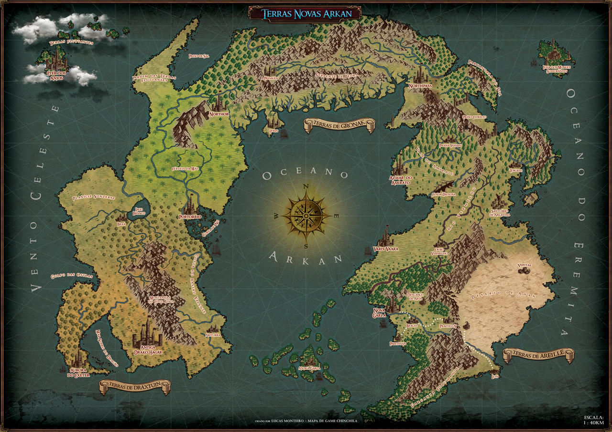

Historia de Arkan
Primeiro milenio
No inicio de Arkan apenas existiam os Elfos sozinhos e em paz governavam o continente logo em seguida vinheram os primeiros resquicios de poderes o quais chamamos os de Perpetuos seres personificados pela essencia da magia mais conhecidos como Deuses ninguem sabe ao certo quem foi o criador nisso foram forjados 5 perpetuos cada um com o dever de governar oque ainda não tinha rei o primeiro foi Valar responsavel por dar a vida as todas criaturas que conhecemos hoje em dia no mundo de Arkan o segundo Geil ficou encarregado de controlar e guiar a magia em um todo o tercerio Isnopes viera a ser o Rei dos mares e do ceu o qual tinha o deve de manter a paz e o equilibrio o quarto Hastem o mestre das mentiras sem função decidiu por si so que iria gorvernar oque lhe vinhera a gostar o quinto Sauron assim como seu irmão mais velho decidiu que ao inves de criar iria gerar o fim a tudo que tivesse vida assim ficou conhecido como o senhor da morte.
Segundo milenio
Valar o senhor da vida então crio em ordem primeiro os Anões depois os Gnomos e por fim os Humanos seu irmão Sauron por inveja criou os Qunaris os quais ele mesmo ensinou o uso da magia antiga então Isnopes para ter ajuda no controle do mundo criou 6 raças derivadas para assim ajudarem ele a governar ceu e o mar conhecidos em sua lingua antiga como Dovah no linguajar humano Dragões logo Hastem por inveja achou que a criação de Isnopes eram fortes de mais lançou um encantamento neles cujo obrigava os ter de passar por um periodo de evolução assim ficaram conhecido como draconatos Geil em vista de que todos seus irmãos estavam influenciando o mundo decidiu então ensinar as raças algo chamado magia assim ensinou aos elfos por serem os primeiros a magia antiga os quais puros de coração a chamaram de druidismo logo ensinou os anões sobre as runas e os humanos a feitiçaria.
Terceiro milenio
Assim tudo estava pronto para crescer e evoluir por conta propria ate que
Quarto milenio
Arkan passava pela pior vivencia ja vista o dominio implacavel dos demonios de Sauron assim então os Anões Humanos e Elfos decidiram se unir pela primeira vez para combater Sauron então começa a guerra conhecida como Eurar de Exalar "A fé contra vontade" em uma guerra sangrenta Sauron estava massacrando a aliança das raças ate que os Draconatos decidiram ajuda-los em sua guerra e com uma aposta e grande sacrifico de sua raça conseguiram aprisionar Sauron em um templo dentro de seu proprio dominio o Inferno. O mundo de Arkan jamais seria o mesmo os Elfos vendo todo aquele derramamento de sangue sem sentido decidiram se isolar e irem embora para sempre de Arkan os Draconatos e Qunaris quase extintos sem rumo e sem mestre viveram como nomades ja os Anões foram de volta para onde nasceram as cidadelas nas montanhas e por fim os Humanos com a paz decidiram prosperar em Arkan e voce se pergunta oque os Gnomos fizeram durante tudo isso ? aquilo que fara a melhor criaram evoluiram e lucraram com o comercio de arma para essa guerra mas impunes não passaram ja em Exalar Gnomera uma maldição começou assim dando inicio a o Quinto milenio.
Quinto milenio
Os Gnomos prosperando em seu territorio começaram a pesquisar usando humanos e magias demoniacas a fim de criar uma nova raça o qual fora uma blasfemia para Valar que com seu ultimo frasco de poder amaldiçou sua criação assim nascendo os Tieflings criaturas metade humanas e demoniacas os quais por influencia do perpetuo entraram em guerra contra os Gnomos visto essa situação as de mais raças decidiram que não iriam intervir e seria problema apenas dos Gnomos os pequenos olhando essa situação e sem forças acabaram perdendo sua cidadela mas ate hoje e um misterio como ocorreu e se foi os Tieflings que os expulsara ou um ocorrido diferente.
Sexto milenio
Na era atual ano 6mil com tanta paz e evolução surgiu algo novo conhecido como guilda os quais os humanos deram rankeds para os melhores e para isso nada melhor que desafios assim surge a caçada aos ultimos Draconatos mas em tanta crueldade o mundo não ficara quieto algo novo surge alem do que todos podem ver................. Ano 6.756 periodo atual.
Mapa de Arkan

Capitais reais

NoThor
Reino Humano

Portorrio
Reino Humano

Azmar do Amirato
Reino Ananico

Varis Vaara
Reino Elfico

Nova Garla
Reino Humano

Aurora de Exeter
Antiga capital Gnomera